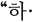

##!!## 마왕은 학원에 간다 Chapter 311 화
##!!## The Demon Prince Goes to Academy Chapter 1
311 화
311 Tue
내 몸이 한 개의 마법 스크롤이 된다.
My body becomes a magic scroll.
마법을 발동할 때마다 복잡한 마력 운용을 스스로 하는 게 아니라. 신체 에 새겨진 룬어들을 불러와 마력을 주입하기만 하면 마법이 발동한다.
You don't use complicated mana on your own every time you invoke magic. All you have to do is call up the loon and inject the mana into the body and the magic will work.
육체는 종이，글자는 마법진을 구 성한다.
The body saves paper, and the letters save the magic team.
캐스팅이 없는 수준은 아니지만， 이것은 그에 가깝다.
Not without casting, but this is close to him.
룬 마법과 스크롤 마법을 인체에 접목시킨，지금까지 없던 마법계통. 초안을 구상한 루이 앙크턴은 이건 안 될 거라고 못을 박았다.
The magic system that combines run magic and scrolling magic into the human body. Louis Angkton, who drafted the draft, nailed that it would not work.
마법은 발전해왔고，룬어라는 것은 지나치게 원시적이다.
Magic has developed, and the language of the rune is too primitive.
발달한 체계를 버리고 원시의 방법 으로 돌아가 고대의 마법언어로 현 대의 마법을 구현하는 건 지나치게 효율성이 뒤떨어졌다.
Abandon advanced systems and return to original methods to implement modern magic in ancient magic language is far behind in efficiency.
일단 현대의 마법을 룬어로 재해석 및 역산해 구성해야 한다는 밑작업 이 필요했다. 룬어에 대한 심도 깊 은 이해는 당연히 따라와야 했다.
Once, the foundation work was needed to reinterpret and reverse modern magic into rune language. A deep understanding of the Looner had to be followed.
헤리엇은 그걸 할 수 있었다.
Harriet could do it.
마법의 명가 생투안 대공은 룬의 중요성을 아주 어릴 적부터 강조해 왔기에 헤리엇은 룬어에 대해 평생 연구해온 전문 학자수준까진 아니라 해도 매우 깊게 이해하고 있었다.
The Magical Master Saint-Tuan has emphasized the importance of Loon since he was very young, so Harriet understood Loon language very deeply, if not at the level of a professional scholar who has studied it all his life.
하지만 거기서 더해，방대한 양의 룬어 수식들을 통째로 외워서 필요 할 때마다 활성화시켜 재배열해야만 했다.
But on top of that, they had to memorize a whole bunch of Runner's formulas, activate them whenever needed, and rearrange them.
헤리엇은 그것도 할 수 있었다.
Harriet could do that, too.
외우는 건 헤리엇에겐 지나치게 쉬 운 일이다.
Memorizing is too easy for Harriet.
그렇기에 헤리엇은 지금 마법연산 이후의 마력운용에 필요한 대부분의 실질적 작업을 머리가 아니라 몸이 대신해주는 상태였다. 필요한 것은 수많은 마법들의 룬어 조합식을 외 우는 것뿐.
That's why Harriet's body, not his head, was taking over most of the actual work needed to operate the mana after the magic operation. All you need to do is to cry out the many magic Looner combinations.
육체가 곧 마력이 허락하는 한 무 한정으로 사용할 수 있는 마법 스크 롤이 다.
As long as the body is allowed by mana, it is a magic screw roll that can be used indefinitely.
그렇기에 헤리엇은 노 캐스팅이라 는 초능력은 없지만，르디나에 필적 하는 같은 능력을 손에 넣었다.
That's why Harriet has the same ability as Ludina, although he doesn't have the supernatural power of no casting.
-쿠르르르….
-Courr....
아직 세트 패배선언이 나오지 않았 으니 올리비아는 리타이어한 게 아 니다. 헤리엇은 붕괴한 경기장에서 피어오르는 매캐한 연기를 향해 손 을 뻗었다.
Olivia didn't retire the set defeat yet. Harriet reached for the acrid smoke rising from the collapsed stadium.
푸른 마력선들이 룬어의 형상을 갖 춘 채 헤리엇의 오른팔에 아로새겨 진다. 마법의 규모가 방대할수록 온 몸을 물들이는 마력선의 규모도 커 진다.
Blue Mana Lines are carved into Harriet's right arm in the shape of Looner. The greater the size of magic, the greater the size of the magic lines that color the whole body.
지금 헤리엇은 오른팔 상박과 하박 전체에 룬어가 빛나고 있었다.
Now Harriet's right arm was shining all over the upper and lower limbs.
-쿠르르릉….
-Currrrrrrrrrrrr....
룬으로 재구성되어 발동되는 마법.
Magic that is reconstructed and activated by a run.
뇌격 (Thunder).
뇌격 (Thunder).
전격이 아니라 하늘에서부터 내리 꽂는 뇌격으로 마무리를 해주겠다. 멀쩡하던 하늘에 갑작스런 어둠이 사위면서，사람들이 웅성대기 시작 한다.
I will finish with a thunderbolt from the sky, not a blitz. As the sudden darkness rises in the fine sky, people begin to roar.
_번쩍!
_Staring up!
한 줄기 섬광이 경기장에 내리꽂혔다.
A flash of light fell on the stadium.
-과르르르릉!
-Crrrrrrrrrrrrrrrrr!
곧이어, 뇌격이 공기를 팽창시키며 발생하는 막대한 굉음이 경기장을 뒤흔들었다.
Soon after, a huge roar caused by a thunderbolt expanding the air shook the stadium.
뇌격이 적중한 장소에선，한동안 침묵이 이어졌다.
In places where the thunderstorm hit, silence continued for a while.

곧이어，잔해 속에서 모습을 드러 낸 을리비아를 보며 헤리엇은 미소 짓고 있었다.
Soon after, Harriet was smiling at Olivia, who appeared in the rubble.
승패는 정해지지 않았지만，이미 한 방 먹이는 것엔 성공했다는 확신 이 있기 때문이었다.
Although no victory or defeat was decided, it was because he was already convinced that he had succeeded in giving a blow.
무너진 경기장의 잔해를 뚫고 만신 창이가 된 을리비아 란체가 모습을 드러냈다.
Ulivia Ranche, who had become a window through the rubble of the collapsed stadium, appeared.
“이건…. 진짜 열받는데에…?”
"That's... it's really pissed off.?â€
헤리엇이 한 방 먹이긴 했지만 결 국 올리비아 란체가 괴물이란 사실 은 변하지 않는다.
Although Harriet gave her a blow, the fact that Olivia Ranche is a monster remains unchanged.
역소환 되지 않았다는 건, 맨몸으 로 이미 플레임 스트라이크와 뇌격 을 버텨냈다는 걸 의미한다. 플레임 스트라이크는 대단위 파괴마법이고, 뇌격은 범위 자체는 좁지만 강력한 대인공격용 마법이다.
If not reversed, it means that he has already endured a flare strike and a thunderclap. Plame strike is a large-scale destructive magic, and a thunderclap itself is a narrow but powerful anti-personnel magic.
하지만 올리비아는 둘 다 버텨냈다.
But Olivia endured both.
관객들은 아무리 무제한급이라곤 해도 이런 상급 파괴마법이 시전되 는 것과 그것을 맨몸으로 버텨내는 상대가 있다는 것에 경악을 금치 못 하고 있었다.
The audience was shocked at the fact that such advanced destructive magic was being tried no matter how unlimited it was, and that there was an opponent who could stand it bare.
올리비아의 입가에는 이미 미소가 사라져 있었다.
A smile had already disappeared around Olivia's mouth.
장난은 끝났다는 듯.
As if the prank was over.
헤리엇의 소매에 가려진 오른팔과 왼팔에 다시금 마력선이 그어지기 시작한다.
The magic lines begin to be drawn again on the right arm and left arm hidden by Harriet's sleeve.
경기장은 붕괴했고，장외는 의미가 없어졌다.
The stadium collapsed, and the outside was meaningless.
헤리엇은 단 한 번만 공격을 허용 하면 패배할 것이고，올리비아 란체 는 저 철벽같은 마력강화의 방벽이 사라지면 패배할 것이다.
Harriet will be defeated if only one attack is allowed, and Olivia Ranche will be defeated if that iron wall of mana-strengthening disappears.
경기장 상황 자체는 헤리엇이 유리 하다.
The situation at the stadium itself is advantageous.
근접해야만 하는 올리비아 란체에 게 붕괴해서 을퉁불퉁해진 지면은 움직이기 힘든 조건이니까.
Olivia Ranche, who has to get close to her, has a crumbling ground, which is a difficult condition to move.
하지만 올리비아는 그런 평범한 기 준에 영향을 받지 않는다.
But Olivia is not affected by such mediocre standards.
날듯이 지면을 밟아 도약하며 근접 해오는 올리비아는 발을 헛딛는 일 없이 접근해온다.
Olivia, who has been walking on the ground as if flying, approaches without missing a step.
물론，육체 자체에 마법을 각인해 사 용한다는 전례 없는 일을 벌인 헤리엇 도 평범한 기준에 속한 사람은 아니다.
Of course, Harriet, who has done an unprecedented job of imprinting magic on the body itself, is not an ordinary person.
헤리엇은 올리비아가 도약해오는 지점.
Harriet is where Olivia takes off.
다음 착지할 장소의 경기장 바닥 파편을 향해，마법을 시전한다.
Toward the next landing site on the floor of the stadium, test the magic.
시전하는 것은 간단한 사이코키네시스 즉, 염동력.
It's simple psychokinesis, or psychokinesis, that is, psychokinesis.
-퍽!
-Puck!
둔중한 소리와 함께 을리비아가 디 뎌야 할 지면의 바위가 갑자기 우측 으로 튕겨나가 버렸다.
With a dull sound, the rock on the ground that Bolivia should dip suddenly bounced to the right.
“!”
“!â€
말하자면，갑자기 발판이 사라져버 린 상황.
So to speak, the situation in which the foothold suddenly disappeared.
- 과당!
- Fructose!
“악!”
"Aah!"
올리비아는 지면을 헛디디며 그대 로 나자빠져버렸다.
Olivia lost her footing and fell into you.
전투가 격화되고 있는 상황에서 갑 작스레 발을 헛디디며 나자빠지는 건 치명적인 위기상황이다.
It is a fatal crisis to slip and fall in a situation where fighting is intensifying.
하지만，올리비아가 너무 우스광스 립게 앞으로 격하게 자빠져버려서 오히려 웃긴 상황이 연출되었다.
However, Olivia's hilarious lip fell so hard ahead that it was rather funny.
« 】五 ，，
« 】五 ，，
......W.
......W.
그리고, 그 광경을 만들어낸 헤리 엇은 공격마법을 캐스팅하는 게 아 니라 그런 을리비아를 비웃었다.
Then, Harry Eck, who created the scene, laughed at Olivia for casting attack magic.
“와…. 와아 진짜….”
"Wow... wow, really....â€
을리비아가 비틀거리며 일어나는 동시에，선연한 비웃음을 머금고 있 는 헤리엇을 바라본다.
As Bolivia stumbles up, it looks at Harriet with a clear sneer.
이따위.
Like this.
이따위 비웃음을 당할 거라고는 상 상조차도 못 하고 있었다.
I couldn't even imagine being laughed at like this.
고작 저런 꼬맹이에게.
To such a little boy.
고작.
only so far.
마법사 따위에게 이런 꼴을 당할 거라고는.
You're not going to be like this by a wizard.
“진짜.”
"Really."
“개.”
"Gae."
“열받네에…?”
"Are you angry?"
올리비아의 마음에 어두운 불이 당 겨진다.
A dark fire strikes Olivia's heart.
목덜미와 이마에 힘줄이 바짝 선 을 리비아 란체가 이를 악물고 다시 한 번，침착하게 헤리엇에게 접근한다. 이 번엔 같은 수법 따윈 먹히지 않았다. 방금은 예상치 못한 공격이었으니까.
Libya's Ranche clenches her teeth and approaches Harriet calmly once again with a tendon on her neck and forehead. The same trick didn't work this time. It was an unexpected attack just now.
주의하는 것만으로도 그까짓 허점 파고들기는 먹히지 않는다.
Just being careful doesn't make such a loophole work.
삽시간에 달려든 올리비아가 일권 을 찌르기 무섭게，헤리엇은 단거리 공간이 동으로 사라져 버 렸다.
As soon as Olivia ran into the first book, Harriet's short-distance space eastward.
하지만，이동을 마친 바로 그 순간.
But the very moment I finished the transfer.
헤리엇은 눈앞으로 치닫고 있는 돌 멩이를 마주하고 있었다.
Harriet was facing a stone approaching his eyes.
늦었다.
You're late.
보호마법을 캐스팅할 짧은 여유조 차 없다.
There is no short margin to cast protective magic.
-쉬익! 그것을 피한 건 헤리엇의 반사신경 이 빨라서가 아니라，순전히 날아오 는 돌멩이의 궤적이 자신을 빗나갔 기 때문이었다.
-Shhhhhhhhhhhhhhhhhhhhhhhhhhhhhhhhhhhhhhhhhhhhhhhhhhhhhhhhhhhhhhhhhhh
날아온 돌멩이의 속도는 평범한 사 람이 맞았다면 머리가 깨져 죽었을 지도 모를 그럴 위력을 담고 있었다.
The speed of the flying stone contained the power of a normal Saram to be killed if he had been hit.
“이게 안 맞네.”
"This doesn't fit."
올리비아가 아쉽다는 듯 입맛을 다 시고 있었다.
Olivia's appetite was burning as if she were sorry.
근접하면 단거리 공간이동으로 도망 친다는 걸 알기에，공간이동으로 도 망친 그 순간을 노려 던진 돌이었다. 다행히 거리가 멀어서 맞추진 못했다.
It was a stone thrown at the moment when space movement ruined the moment because he knew that he would run away in short distance. Fortunately, it was too far away to match.
헤리엇은 등골이 서늘해졌다.
Harriet's spine cooled down.
같은 패턴의 공격이나 허점을 찌르 거나 피하는 행동들에 대해서 상대 는 점점 대처법을 찾아가고 있다.
The opponent is increasingly looking for a response to the same pattern of attacks or actions that avoid loopholes.
공간이동 하는 그 순간，도착하고 나서의 짧은 틈.
The moment of space travel, a short gap after arrival.
그 찰나의 순간에 상대는 돌멩이로 자신을 저격할 정도다.
At that moment, the opponent even shoots himself with a stone.
다음엔 빗나가지 않을 것이다.
Next time you won't miss.
지금이 마지막이다.
This is the last time.
어차피 잔여 마력량이 그리 많지 않다. 이미 강력한 마법들을 많이 사용했다.
There is not much horsepower left anyway. I've already used a lot of powerful magic.
“너，이제 슬슬 마력도 바닥인 것 같은데?，’
"You're starting to run out of mana, aren't you?，’
그리고 올리비아 또한 헤리엇의 그 런 기색을 알고 있었다.
And Olivia was also aware of Harriet's run.
-쿵!
-Thump!
을리비아가 전진해오는 걸 보며 헤 리엇은 공격마법보단 지형지물을 사 용하길 택했다.
Watching Bolivia move forward, Harriet chose to buy topography rather than attack magic.
염동력으로 경기장의 잔해를 들어 올려 던진다.
Lift up the debris of the stadium with the hydroelectric power and throw them.
-쾅! 과쾅!
-Bang! Overbanging!
바위나 다름없는 잔해들을 을리비 아는 정면으로 깨부숴버리며 전진하 고 있었다.
They were moving forward, crushing the rock-like debris straight ahead of the Eulibi Al.
엘렌은 적어도 라멘트라는 신검으 로 벽을 부수고 문을 잘랐다.
Ellen broke the wall and cut the door with at least a new sword called Lament.
올리비아 란체는 맨몸으로 그 짓거 릴 하고 있었다. 시시각각 다가오는 올리비아에게 경기장 파편을 던져대 는 것도 한계가 있다.
Olivia Ranche was doing it with her naked body. There is also a limit to throwing shrapnel at Olivia, who is approaching every minute.
하지만 헤리엇은 그 방법밖에 없다는 듯 경기장 잔해들을 집어던지고，을리 비아는 그것을 부수며 전진해온다.
But Harriet throws away the ruins of the stadium as if it were the only way, and Euli Via is going forward breaking it.
그렇기에，매캐한 흙먼지가 치솟은 건 당연한 일이었다.
Therefore, it was only natural for the acrid dust to soar.
올리비아는 헤리엇의 코앞에 도달 해선，또다시 블링크로 헤리엇이 빠 져나간 걸 보고 이를 악물었다.
Olivia clenched her teeth when she saw Harriet fall back into the blink.
“짜증나게.”
"Annoyed."
올리비아는 흙먼지로 인해 시야가 가려지는 걸 보며 헤리엇의 의도가 이것이었음을 짐작했다.
Olivia guessed this was Harriet's intention when she saw the dust obscuring her vision.
이렇게 되면 상대가 어느 방면으로 공간이동 했는지 파악할 수 없다. 흙먼 지투성이라 관객들도 상황이 어찌 돌 아가는지 제대로 파악할 수가 없었다.
In this case, it is impossible to figure out which direction the opponent moved. It was so dusty that the audience couldn't grasp how the situation was going.
“후우….”
"Whoo...."
일순，올리비아의 몸에 깃든 푸른 마 력이 갑작스레 폭발적으로 타올랐다.
In Ilsoon, the blue horse power in Olivia's body suddenly exploded.
-쿠쾅!
-Koom!
일전, 사비올린 타나가 어둠에 물든 샬롯과 싸울 때 행했던 것과 같다.
Like the other day, Saviolin Tana did when he fought against Charlotte, who was stained with darkness.
마력 충격파가 폭발하며 비산하던 흙먼지를 순식간에 걷어내 버렸다.
A mana shock wave exploded and quickly removed the scattering dust.
올리비아는 안개를 걷어내듯 먼지를 날려버리곤，또다시 자신의 반대편에 나타난 헤리엇을 지켜보고 있었다. 이제 경기장은 아예 난장판을 넘어 사라져버린 수준이었다.
Olivia blew off the mist like she was clearing it and watched Harriet again on the other side of her. Now, the stadium has gone beyond the chaos.
“더 이상 던져댈 것도 없네?”
"There's nothing more to throw at you?"
올리비아가 보기에 헤리엇은 공간 이동도 벅차 보이는 상황이어서 염 동력으로 큼직한 파편을 던져대는 하찮은 공격만 해오고 있었다.
In Olivia's view, Harriet seems to be overwhelmed with space, so he has only been making minor attacks that throw large pieces of debris with Yeom's power.
하지만 바위만한 크기의 파편들은 올리비아가 죄다 부숴버렸다.
But the rubble the size of a rock was destroyed by Olivia.
남아있는 건 돌멩이들뿐.
All that's left is stones.
단거리 공간이동이나 흙먼지를 일
To move short distances or dust
으키는 얕은 수작으로 도망치는 것 도 이젠 끝이다.
It's over now to run away with a shallow trick.
이 정도면，꼬맹이 마법사를 지나 치게 오래 상대했다.
At this rate, the little guy has been dealing with the wizard for a long time.
“이젠 안 던져도 돼.”
"You don't have to throw anymore."
하지만，헤리엇은 웃고 있었다.
However, Harriet was smiling.
“다 던져놨거든.”
"I threw it all away."
“……뭐?”
"......what?"
다 던져놨다니.
I can't believe you threw it all.
그제야，올리비아는 마력 충격파를 발산했음에도 자신의 주변에 돌멩이 가 박혀있는걸 볼 수 있었다.
Only then, Olivia could see a rock stuck around her, even though she gave off a mana shock wave.
이런 돌멩이 따위，충격파에 밀려 났어야 했는데 그대로 남아있었다.
I should have been pushed away by these stones and shock waves, but they remained the same.
올리비아는 본다.
Olivia looks.
비산한 파편들，돌멩이 조각들이 흩어져있는 모양 속에서.
In a shape scattered with scattered debris, stone fragments.
자세히 알 수는 없지만.
I don't know the details.
그 파편들의 형태에서 발견되는 그 어떤.
any of which is found in the form of the fragments.
기이한 규칙성.
eccentric regularity
“내 마력은 거의 다 썼지만，내 마 력을 쓰지 않으면 되는 일이니까.”
"I've almost exhausted my mana, but it's only as long as I don't use my mana."
헤리엇은 파편을 던졌다.
Harriet threw the shrapnel.
그리고，비산하는 파편들을 올리비 아가 눈치 채지 못하게 배열 및 고 정하고 있었다.
Then, the scattering debris was arranged and arranged unnoticed by Olivier.
자연의 마나를 사용하는 방법.
How to use nature's mana.
라인하르트는 그것을 알아내보라 했지만，여전히 헤리엇은 그것은 할 줄 모른다.
Reinhardt tried to figure it out, but Harriet still doesn't know how to do it.
하지만 자연의 마나를 사용하는 방 법은 애초에 있지 않은가.
But isn't there a way to use nature's mana in the first place?
마법진이라는 이름의 형태로.
in the form of a magic wand
마법진은 이런저런 곳에 쓰이지만， 대규모 마법진은 마력석의 마나를 쓰기도 하지만 본래 자연의 마나를 끌어다 쓰는 형태로 구성된다.
Magical teams are used in various places, but large-scale magicians use mana of the Mana Stone, but they are usually made up of natural mana.
헤리엇은 이 짧은 새에 마법진을 경기장에 설치한다는 무지막지한 일 을 벌였다.
Harriet did a tremendous job of setting up a magic team in the stadium in this short bird.
-우우웅….
- Whoo....
“이런…!” 올리비아는 이미 벗어날 수 없을 정도로 광범위한 지역에 설치된 마 법진이 반응하기 시작하는 걸 멍하 니 지켜보고 있었다.
"Oh, my...!" Olivia was staring blankly at the start of a response of Ma's legal camp already set up in an area so extensive that she couldn't escape.
“내가 이겼어.”
"I won."
헤리엇의 미소와 함께.
With Harriet's smile.
헤리엇이 설치한 마법진이 푸른빛 을 발하며 완성된 진의 형태를 이룸 과 동시에.
Harriet's Magic Circle gives off a blue glow and forms a complete gin.
마법이 발동한다.
Magic is activated.
발동하는 마법은 인페르노(Inferno).
The magic that activates is Inferno.
플레임 스트라이크보다도 더더욱 상위의 화염계열 파괴마법이다.
It is even higher than the flame strike.
지나치게 광범위하게 펼쳐진 마법 이라 피할 수도 없다.
It's an over-wide spell, and you can't avoid it.
을리비아도 직감한다.
Olivia also has a hunch.
이건, 망했다.
This is, I'm screwed.
자신의 발밑에 시뻘건 화염이 넘실 대기 시작하는 걸 보며，올리비아가 울상이 되어서 외쳤다.
Watching the red flames begin to flow under his feet, Olivia cried in tears.
“너어어어…! 두고봐아아아아!”
"You...! You'll see!"
“두고 보자는 사람이 제일 안 무섭 거든!”
"The one who wants to see is the least scary!"
치밀하고 격렬했던 싸움의 끝에 나 누는 대화로 보기엔 지나치게 유치 했다.
It was too childish to see it as a conversation after a close and intense fight.
-과르르르릉!
-Crrrrrrrrrrrrrrrrr!
시뻘건 지옥불이 을리비아를 집어 삼키며 하늘을 향해 치솟았다.
A blush of hell engulfed Bolivia and shot up into the sky.
올리비아는 이번 마법만큼은 견디 지 못했다.
Olivia couldn't stand this magic.
-헤，헤리엇 드 생투안이 2세트를 가져갑니다!
-Heh, Harriet de Saintuan is taking two sets!
관객들은 뱀의 혀처럼 하늘을 향해 넘실대는 그 섬뜩한 불줄기를 멍하 니 쳐다보고 있었다.
The audience stared blankly at the gruesome fire-flowing skyward like a snake's tongue.
헤리엇은 싸움 자체엔 익숙하지 않 지만, 싸움에서 뭐가 중요한지는 잘 알고 있었다.
Harriet was not used to fighting in itself, but he knew what was important in fighting.
자신의 정보를 최대한 숨길 것.
Hide your information as much as you can.
헤리엇은 비장을 수를 잘 숨겼다. 자신이 뭘 할 수 있는지 최대한 숨 겨서 한 방을 먹였다. 파편을 던지는 게 남아있는 공격수단의 전부라 착 각하게 하면서，바닥에 대규모 마법 진을 설치하는 진짜 의도를 숨겼다.
Harriet hid the spleen well. I gave him a shot at what he could do. He hid his real intention of setting up a large magic camp on the floor, making sure that throwing debris was all he had left.
하지만, 결과적으로 말하자면 전부 요행이 다.
But as a result, it's all luck.
올리비아는 헤리엇을 지나치게 깔봤 고，헤리엇은 속임수를 잘 이용했다.
Olivia looked down on Harriet too much, and Harriet used the trick well.
거기에, 당연한 거긴 하지만 올리 비아는 끝까지 신성력을 사용하지 않았다. 더더욱 당연하게도 티아마 타를 소환하지도 않았다. 신성력을 사용했더라면 마지막 헤리엇의 공격 에서 무사할 수 있었을 것이다.
There, Ollie Bia did not use divine power until the end, though it was obvious. More and more, of course, did not summon Tiamatta. The use of divine power would have saved us from the last Harriet attack.
결국，을리비아는 제약조건이 많은 상태에서 상대를 우습게 보다가 패 착을 맞았다.
In the end, Bolivia was beaten by its opponent in a lot of constraints.
물론 경과가 어찌되었건, 지금까지 의 토너먼트 중에서 제일 화려한 싸 움이 벌어졌기에 관객들의 흥분상태 는 최고조였다.
Of course, regardless of the progress, the excitement of the audience was at its highest level because of the most spectacular booms of the tournament.
세트스코어는 1:1.
The set score is 1:1.
올리비아는 이제 방심하지 않을 것이다.
Olivia won't let her guard down any more.
복원마법으로 복구된 경기장에 헤 리엇과 올리비아가 재소환 되었다.
Harriet and Olivia were recalled to the restored stadium.
올리비아는 당장에라도 잡아먹을 것처럼 헤리엇을 노려보고 있었다.
Olivia was staring at Harriet as if she would eat him right away.
방심하지 않을 것이고 우습게 보지 도 않을 것이며 속임수에도 더 이상 당하지 않을 것이다.
You won't let your guard down, you won't look funny, and you won't be fooled anymore.
그러니 경기 시작만 기다리는 올리 비아를 보며，헤리엇은 손을 번쩍 들었다.
So looking at Ollie Bia, who was just waiting for the start of the game, Harriet's hand.
“기권할게요.”
"I'll abstain."
그 말에 을리비아의 안색이 하얗게 질리는 건 당연한 결과였다.
It was a natural result that Olivia's complexion turned white.
“너，너어! 너! 너! 하지 마! 기권
"You, you! You! You! Don't! abstention from voting
하지 말라고!”
Don't!"
“피곤해서 더 못 하겠어요.”
"I'm too tired to do it anymore."
마력이 부족하다거나 하는 것들은 핑계가 안 된다.
Lack of mana is no excuse.
라인하르트의 경우에는 마력강화로 인한 컨디션 난조를 회복시킬 수 없 었지만，평범한 마력고갈 상태는 대 기 중인 마법사가 사이펀 마나라는 마력보충 마법으로 해결해줄 수 있 었다.
In the case of Reinhardt, he could not recover from his poor condition due to enhanced mana, but the normal mana condition could be solved by a wizard who was in the midst of a great mana.
난데없는 기권선언.
an abrupt declaration of abstention
-거…. 음. 그. 헤리엇 드 생투안의 기권으로 인해，올리비아 란체가 본 선 C조 우승자로…. 결정되었습니다.
-Well... well, because of the withdrawal of Harriet de Saint-Tuan, Olivia Lanze was the winner of Group C.... It's been decided.
당연히，선수가 더 싸우지 않겠다 는데 강요할 수는 없는 노릇이다.
Naturally, you can't force a player to not fight anymore.
“기권하지 마! 너! 하지 말라니 까!”
"Don't abstain! You! Don't tell me not to!"
올리비아가 씩씩거리며 외쳐봐야 헤리엇은 더 싸울 마음이 없었다.
Olivia's grunts made Harriet no longer willing to fight.
헤리엇은 올리비아를 이길 수 없다.
Harriet can't beat Olivia.
“그래，딱 한 세트，한 세트만 더 해! 다음 세트 이기면 네가 이긴 걸 로 해! 내가 기권할게 그럼!”
"Yes, just one set, just one more set! If you win the next set, you win! I'll abstain, then!"
“싫다니까요? 그걸 제가 왜 해줘 요? 언니 싸움도 못하는데.”
"No. Why would I do that? She can't even fight."
“아아아아악!”
"Ahhhhhhh!"
헤리엇의 목적은 애초부터 올리비 아를 이기는 것이 아니라 자신을 무 시할 수 없게 만드는 거였다.
Herriott's purpose was not to defeat Olivier Ah from the start, but to make him unable to ignore himself.
헤리엇은 그것에 성공했다.
Harriet succeeded in it.